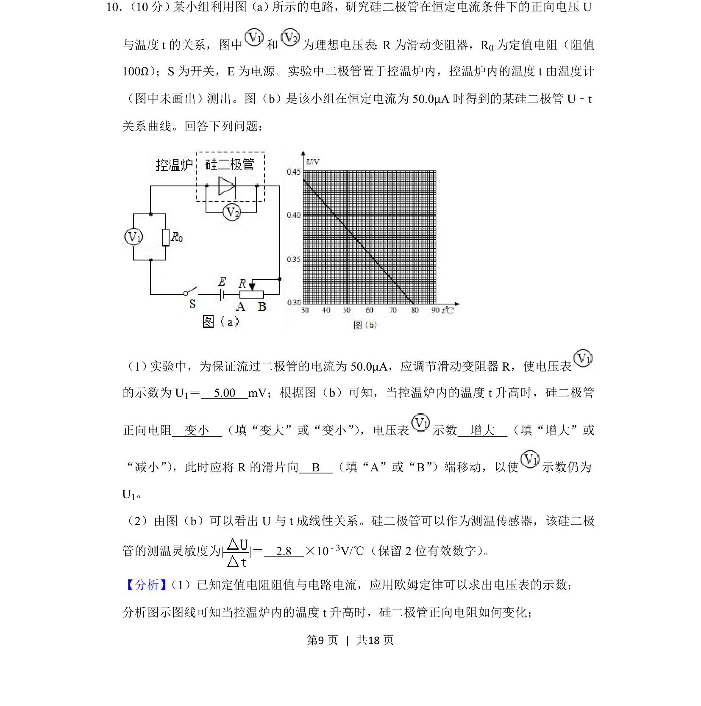
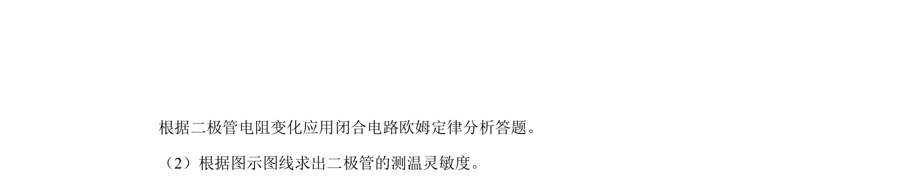
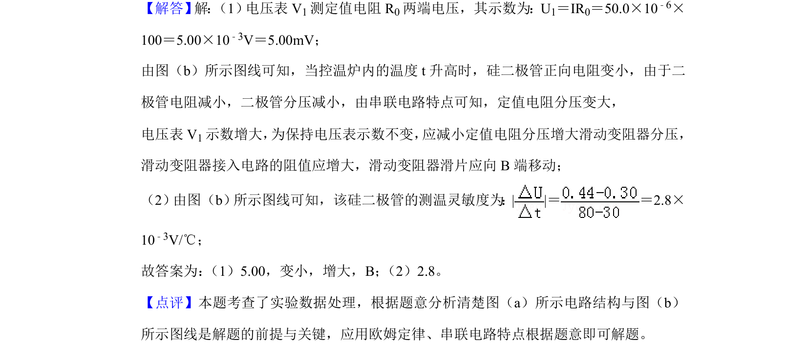

考点：欧姆定律 二极管正向电阻 实验数据分析 灵敏度计算
欧姆定律
二极管正向电阻
实验数据分析
灵敏度计算


研究硅二极管在恒定电流下正向电压与温度的关系，涉及欧姆定律及数据处理。

📄 原 PDF 第 9 页：素材/真题/吉林/2008-2024·（吉林）物理高考真题/2019年高考物理试卷（新课标Ⅱ）（解析卷）.pdf
素材/真题/吉林/2008-2024·（吉林）物理高考真题/2019年高考物理试卷（新课标Ⅱ）（解析卷）.pdf